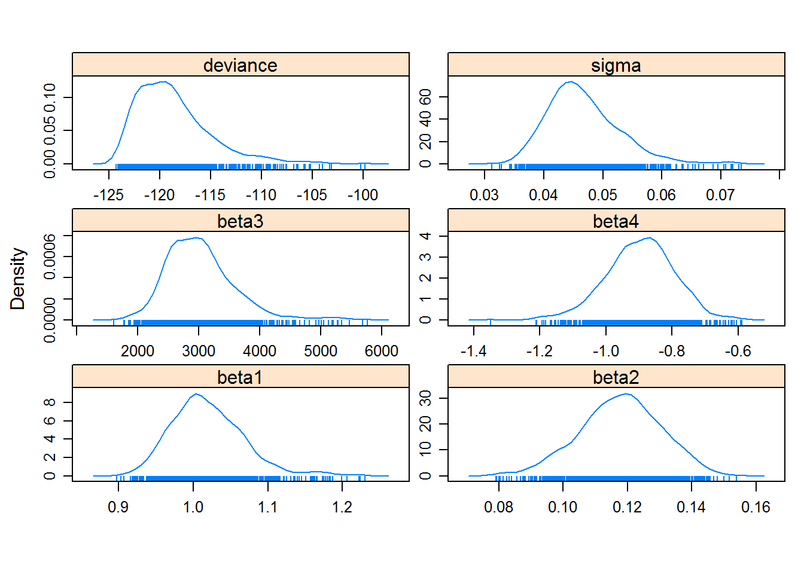

In this tutorial, we will use Markov Chain Monte Carlo (MCMC) methods and Bayesian inference to estimate the variance model and the curve function parameters in one step. R will send the data and instructions to Bayesian software, WinBUGS, and then retreive the results for display using the R package, R2WinBUGS. If you have not already installed WinBUGS, the software download and instructions are found here. (Very similar implementations are possible with OpenBUGS or JAGS and their respective R packages.)
First we reload the O’Connell ELISA data as in previous tutorials:
# O'Connell ELISA data
ocon <- read.csv(file.path(data.path, "ocon.csv"), header = TRUE)
head(ocon)## conc rep od
## 1 0 1 0.100
## 2 0 1 0.120
## 3 3 1 0.120
## 4 8 1 0.120
## 5 23 1 0.130
## 6 69 1 0.153# Simple 4pl model: Constant variance (as standard deviation, sigma) ----
# Need number of observations
J <- nrow(ocon)
# all the data minus the rep variable
data <- c(J = J, as.list(ocon[ , c(1, 3)]))
#str(data)
# Initial values
# Could be initial values from the classical model
#inits0 <- as.numeric(y.coef)
# Or simply choose reasonable values
inits1 <- c(1, 0.1, 3000, -1, 0.002)
names(inits1) <- c("beta1", "beta2", "beta3", "beta4", "var")
# If running more than 1 chain, need a set of initial values for each chain
# Maybe as a function such as adding randomness
# inits2 <-
# inits3 <-
# As with other BUGS inputs, format as a list
inits <- list(inits1
#, inits2, inits3
)
# Parameters to monitor (only need to monitor betas and sigma this time)
parameters <- c(#"x0",
"beta1", "beta2", "beta3", "beta4", "sigma"
)
model1 <- function(){
for (i in 1:J){
mu[i] <- beta2 + (beta1 - beta2)/(1 + pow(conc[i] / beta3, beta4))
od[i] ~ dnorm(mu[i], tau)
# Original code:
# Is this right? sigma[i] but one tau?
# sigma[i] <- 1.0/(sqrt(tau))
}
# Should not allow betas 1-3 to be <= 0
# (we know that even at x=0, y ne 0 unless it was transformed)
# beta1 and beta2 had dnorm(0, 0.001), but a mean of zero is not
# realistic. Are dgammas OK for beta1 and beta2? Or log-normal?
# Also, beta1 must be > beta2. Could this constraint be added?
beta1 ~ dgamma(0.001,0.001)
beta2 ~ dgamma(0.001,0.001)
beta3 ~ dgamma(0.001,0.001)
# We know that with an immunometric assay beta4 must be <= 0.
# Should it be specified like this?
beta4 ~ dunif(-10,0)
# Precision, tau, cannot be negative
# tau ~ dgamma(0.0001,0.001)
# Would like to monitor sigma rather than tau:
tau <- 1/var
var ~ dgamma(0.001,0.001)
sigma <- sqrt(var)
}
write.model(model1)
bugs.out <- bugs(data, inits = inits, parameters, "model.bug",
n.chains = 1, n.iter = 2000,
bugs.directory="c:/Program Files/WinBUGS14/"
, working.directory=getwd()
, debug = F
)
# Parameter posterior distributions
mcmc.out1 <- as.mcmc.list(bugs.out)
summary(mcmc.out1, q = c(0.025, 0.975))##
## Iterations = 1001:2000
## Thinning interval = 1
## Number of chains = 1
## Sample size per chain = 1000
##
## 1. Empirical mean and standard deviation for each variable,
## plus standard error of the mean:
##
## Mean SD Naive SE Time-series SE
## beta1 1.0195 0.049620 0.0015691 0.0056799
## beta2 0.1177 0.012711 0.0004020 0.0007194
## beta3 3030.2660 574.374302 18.1633102 56.6928296
## beta4 -0.8971 0.104316 0.0032988 0.0091869
## deviance -118.6319 3.777990 0.1194705 0.2292118
## sigma 0.0467 0.006275 0.0001984 0.0002871
##
## 2. Quantiles for each variable:
##
## 2.5% 97.5%
## beta1 0.93860 1.14005
## beta2 0.09136 0.14160
## beta3 2149.77500 4454.65000
## beta4 -1.11515 -0.71477
## deviance -123.40250 -108.79750
## sigma 0.03671 0.06112# Nice plots
xyplot(mcmc.out1)densityplot(mcmc.out1)
#autocorr.plot(mcmc.out1) # not super clear (remember how to interpret)# Simple 4pl model: Constant variance (as standard deviation, sigma) ----
# Everything is the same as model 1 except the priors on betas 1--3
model2 <- function(){
for (i in 1:J){
mu[i] <- beta2 + (beta1 - beta2)/(1 + pow(conc[i] / beta3, beta4))
od[i] ~ dnorm(mu[i], tau)
# Original code:
# Is this right? sigma[i] but one tau?
# sigma[i] <- 1.0/(sqrt(tau))
}
# Should not allow betas 1-3 to be <= 0
# (we know that even at x=0, y ne 0 unless it was transformed)
# beta1 and beta2 had dnorm(0, 0.001), but a mean of zero is not
# realistic. Are dgammas OK for beta1 and beta2? Or log-normal?
# Also, beta1 must be > beta2. Could this constraint be added?
beta1 ~ dunif(0, 10)
beta2 ~ dunif(0, 10)
beta3 ~ dunif(0, 100000) # we really don't know a priori...
# We know that with an immunometric assay beta4 must be <= 0.
# Should it be specified like this?
beta4 ~ dunif(-10,0)
# Precision, tau, cannot be negative
# tau ~ dgamma(0.0001,0.001)
# Would like to monitor sigma rather than tau:
tau <- 1/var
var ~ dgamma(0.001,0.001)
sigma <- sqrt(var)
}
write.model(model2)
bugs.out <- bugs(data, inits = inits, parameters, "model.bug",
n.chains = 1, n.iter = 2000,
bugs.directory="c:/Program Files/WinBUGS14/"
, working.directory=getwd()
, debug = F
)
# Parameter posterior distributions
mcmc.out2 <- as.mcmc.list(bugs.out)
summary(mcmc.out2, q = c(0.025, 0.975))##
## Iterations = 1001:2000
## Thinning interval = 1
## Number of chains = 1
## Sample size per chain = 1000
##
## 1. Empirical mean and standard deviation for each variable,
## plus standard error of the mean:
##
## Mean SD Naive SE Time-series SE
## beta1 1.05825 0.052944 0.0016742 0.0062994
## beta2 0.11686 0.013033 0.0004121 0.0006617
## beta3 3552.03700 697.234982 22.0485061 83.5677140
## beta4 -0.83827 0.099842 0.0031573 0.0087420
## deviance -119.09920 3.438055 0.1087208 0.1885714
## sigma 0.04691 0.006216 0.0001966 0.0002445
##
## 2. Quantiles for each variable:
##
## 2.5% 97.5%
## beta1 0.96809 1.17000
## beta2 0.08963 0.14333
## beta3 2458.75000 5136.47500
## beta4 -1.04103 -0.66819
## deviance -123.40000 -110.20000
## sigma 0.03701 0.06192# Nice plots
xyplot(mcmc.out2)densityplot(mcmc.out2)#autocorr.plot(mcmc.out2) # not super clear (remember how to interpret)# Heteroscedastic 4pl model: variance changes as a function of y ----
# Data is the same as model 1 and 2
# Initial values for variance model change
# Chose reasonable values
inits1 <- c(1, 0.1, 3000, -1, 0.002, 1.2)
names(inits1) <- c("beta1", "beta2", "beta3", "beta4", "sigma.sq", "theta")
# If running more than 1 chain, need a set of initial values for each chain
# Maybe as a function such as adding randomness
# inits2 <-
# inits3 <-
# As with other BUGS inputs, format as a list
inits <- list(inits1
#, inits2, inits3
)
# Parameters to monitor (only need to monitor betas and sigma this time)
parameters <- c(#"x0",
"beta1", "beta2", "beta3", "beta4", "sigma", "theta"
)
model3 <- function(){
for (i in 1:J){
mu[i] <- beta2 + (beta1 - beta2)/(1 + pow(conc[i] / beta3, beta4))
# Tau changes
od[i] ~ dnorm(mu[i], tau[i])
tau[i] <- 1/var[i]
# same variance model from previous tutorials
var[i] <- sigma.sq * pow(mu[i], 2*theta)
}
# Should not allow betas 1-3 to be <= 0
# (we know that even at x=0, y ne 0 unless it was transformed)
# beta1 and beta2 had dnorm(0, 0.001), but a mean of zero is not
# realistic. Are dgammas OK for beta1 and beta2? Or log-normal?
# Also, beta1 must be > beta2. Could this constraint be added?
beta1 ~ dunif(0, 10)
beta2 ~ dunif(0, 10)
# reduced the upper limit x10 because would not converge
beta3 ~ dunif(0, 10000)
# We know that with an immunometric assay beta4 must be <= 0.
# Should it be specified like this?
beta4 ~ dunif(-10,0)
# Precision, tau, cannot be negative
# Would like to monitor sigma rather than tau or var, but advice on priors
# for variance are more common. And for consistency with previous constant
# variance models (model2):
sigma.sq ~ dgamma(0.001,0.001)
sigma <- sqrt(sigma.sq)
# Could use this prior for theta
theta ~ dunif(0, 5)
# Or could give stronger prior belief to constant variance (ie. theta = 0)
# and not exclude possibility of decreasing variance...
# theta ~ dnorm(0, 0.1)
}
write.model(model3)
bugs.out <- bugs(data, inits = inits, parameters, "model.bug",
n.chains = 1, n.iter = 2000,
bugs.directory="c:/Program Files/WinBUGS14/"
, working.directory=getwd()
, debug = F
)
# Parameter posterior distributions
mcmc.out3 <- as.mcmc.list(bugs.out)
summary(mcmc.out3, q = c(0.025, 0.975))##
## Iterations = 1001:2000
## Thinning interval = 1
## Number of chains = 1
## Sample size per chain = 1000
##
## 1. Empirical mean and standard deviation for each variable,
## plus standard error of the mean:
##
## Mean SD Naive SE Time-series SE
## beta1 1.1784 0.103901 0.00328563 0.0177734
## beta2 0.1128 0.002399 0.00007587 0.0001383
## beta3 5346.4140 1576.322149 49.84768316 266.3650059
## beta4 -0.7278 0.048506 0.00153389 0.0067171
## deviance -183.0511 3.422363 0.10822463 0.2283715
## sigma 0.1137 0.028573 0.00090354 0.0025564
## theta 1.2694 0.145260 0.00459353 0.0126186
##
## 2. Quantiles for each variable:
##
## 2.5% 97.5%
## beta1 0.97358 1.3860
## beta2 0.10820 0.1179
## beta3 2701.62500 8837.5250
## beta4 -0.83270 -0.6501
## deviance -187.90000 -175.0975
## sigma 0.07042 0.1806
## theta 0.99062 1.5532# Nice plots
xyplot(mcmc.out3)densityplot(mcmc.out3)#autocorr.plot(mcmc.out2) # not super clear (remember how to interpret)# Heteroscedastic 4pl model: variance changes as a function of y ----
# Everything is the same as model3 except prior for theta
model4 <- function(){
for (i in 1:J){
mu[i] <- beta2 + (beta1 - beta2)/(1 + pow(conc[i] / beta3, beta4))
# Tau changes
od[i] ~ dnorm(mu[i], tau[i])
tau[i] <- 1/var[i]
# same variance model from previous tutorials
var[i] <- sigma.sq * pow(mu[i], 2*theta)
}
# Should not allow betas 1-3 to be <= 0
# (we know that even at x=0, y ne 0 unless it was transformed)
# beta1 and beta2 had dnorm(0, 0.001), but a mean of zero is not
# realistic. Are dgammas OK for beta1 and beta2? Or log-normal?
# Also, beta1 must be > beta2. Could this constraint be added?
beta1 ~ dunif(0, 10)
beta2 ~ dunif(0, 10)
# reduced the upper limit x10 because would not converge
beta3 ~ dunif(0, 10000)
# We know that with an immunometric assay beta4 must be <= 0.
# Should it be specified like this?
beta4 ~ dunif(-10,0)
# Precision, tau, cannot be negative
# Would like to monitor sigma rather than tau or var, but advice on priors
# for variance are more common. And for consistency with previous constant
# variance models (model2):
sigma.sq ~ dgamma(0.001,0.001)
sigma <- sqrt(sigma.sq)
# Could use this prior for theta
# theta ~ dunif(0, 5)
# Or could give stronger prior belief to constant variance (ie. theta = 0)
# and not exclude possibility of decreasing variance...
theta ~ dnorm(0, 0.1)
}
write.model(model4)
bugs.out <- bugs(data, inits = inits, parameters, "model.bug",
n.chains = 1, n.iter = 2000,
bugs.directory="c:/Program Files/WinBUGS14/"
, working.directory=getwd()
, debug = F
)
# Parameter posterior distributions
mcmc.out4 <- as.mcmc.list(bugs.out)
summary(mcmc.out4, q = c(0.025, 0.975))##
## Iterations = 1001:2000
## Thinning interval = 1
## Number of chains = 1
## Sample size per chain = 1000
##
## 1. Empirical mean and standard deviation for each variable,
## plus standard error of the mean:
##
## Mean SD Naive SE Time-series SE
## beta1 1.1535 0.10411 0.00329214 0.0184574
## beta2 0.1131 0.00241 0.00007622 0.0001588
## beta3 4975.0440 1584.67990 50.11197839 325.6193965
## beta4 -0.7387 0.05024 0.00158876 0.0074612
## deviance -182.6329 3.81619 0.12067854 0.3229936
## sigma 0.1174 0.03508 0.00110945 0.0057294
## theta 1.2807 0.16624 0.00525709 0.0284878
##
## 2. Quantiles for each variable:
##
## 2.5% 97.5%
## beta1 0.99095 1.3781
## beta2 0.10840 0.1181
## beta3 2811.40000 8608.3000
## beta4 -0.83910 -0.6527
## deviance -188.20000 -173.6950
## sigma 0.06959 0.2094
## theta 0.96998 1.6453# Nice plots
xyplot(mcmc.out4)densityplot(mcmc.out4)#autocorr.plot(mcmc.out2) # not super clear (remember how to interpret)Model is slower to converge with this prior for theta, but estimates are similar.
In this tutorial, we have …